Simulation Compiler#
The SimulationCompiler turns an OpenVCAD design into a finite-element mesh plus cell-wise simulation data. The supported backends in this guide are:
FENICSX_XDMFfor.xdmf+.h5mesh/data bundlesABAQUS_INPfor.inpmesh export
This page is a hands-on guide to the exporter workflow. It is organized as three lessons: a volume-fractions export, an export-only direct-mechanical beam, and a self-contained OpenVCAD-to-FEniCSx beam solve. It focuses on the tetrahedral XDMF/H5 path, shows the matching hexahedral Abaqus calls, and explains the two export modes that matter most:
volume_fractionsexported as both a stochasticmaterial_idfield and rawvolume_fraction_*fieldsdirect scalar fields such as
modulus,poissons_ratio, anddensityexported directly per element
Prerequisites#
OpenVCAD installed with
pip install OpenVCADFamiliarity with the Getting Started guide and the Functional Grading Guide
The guide example files live under examples/compilers/simulation/:
01_volume_fractions_export.py02_direct_mechanical_properties_export.py03_fenicsx_load_exported_design.py
What this compiler exports#
The simulation compiler always starts from the same ingredients:
a prepared OpenVCAD design
a target mesh type
one export backend
the attributes you want carried into the simulation mesh
The mesh itself can be:
hexahedral using a regular voxel-style grid
tetrahedral using a tet mesh with variable sized elements
The attribute path depends on what you attach to the model:
volume_fractionsis treated as a multi-material mixture. The compiler samples the continuous mixture, performs a deterministic weighted stochastic draw per element, and writes the resultingmaterial_idfield. It also writes the rawvolume_fraction_*cell fields for convenience.direct scalar attributes such as
modulus,poissons_ratio, anddensityare sampled directly as cell-wise values. There is no stochastic material draw in this path.
Why XDMF comes with an H5 file#
The .xdmf file is the lightweight descriptor that tells downstream tools where the mesh and cell datasets live. The bulk numeric arrays live in the paired .h5 file. In practice:
.xdmfdescribes the topology, geometry, and named attributes.h5stores the actual node coordinates, element connectivity, and cell-data arrays
That pairing is the normal way to move simulation-sized meshes into tools such as DOLFINx/FEniCSx and viewers such as ParaView.
Lesson 1: Volume fractions#
The script examples/compilers/simulation/01_volume_fractions_export.py builds a centered rectangular bar with a left-to-right material blend. It exports the same design three ways:
hex + Abaqus
tet + XDMF/H5 (high resolution)
tet + XDMF/H5 (low resolution)
import os
import shutil
import pyvcad as pv
import pyvcad_compilers as pvc
import pyvcad_rendering as viz
materials = pv.default_materials
bar_length = 30.0
bar_width = 10.0
bar_height = 10.0
half_length = 0.5 * bar_length
bar = pv.RectPrism(pv.Vec3(0, 0, 0), pv.Vec3(bar_length, bar_width, bar_height))
fractions = pv.VolumeFractionsAttribute(
[
(f"1 - clamp((x + {half_length}) / {bar_length}, 0, 1)", materials.id("red")),
(f"clamp((x + {half_length}) / {bar_length}, 0, 1)", materials.id("blue")),
]
)
bar.set_attribute(pv.DefaultAttributes.VOLUME_FRACTIONS, fractions)
root = bar
output_dir = os.path.join(os.path.dirname(__file__), "output", "volume_fractions")
hex_settings = pvc.SimulationHexMeshSettings()
hex_settings.voxel_size = pv.Vec3(0.25, 0.25, 0.25)
abaqus_settings = pvc.SimulationCompilerSettings()
abaqus_settings.output_directory = output_dir
abaqus_settings.file_prefix = "volume_fractions_hex"
abaqus_settings.backend = pvc.SimulationBackend.ABAQUS_INP
abaqus_settings.mesh_kind = pvc.SimulationMeshKind.HEX
abaqus_settings.hex_settings = hex_settings
abaqus_settings.random_seed = 42
abaqus_settings.material_defs = materials
high_fenics_settings = pvc.SimulationCompilerSettings()
high_fenics_settings.output_directory = output_dir
high_fenics_settings.file_prefix = "volume_fractions_tet_high"
high_fenics_settings.backend = pvc.SimulationBackend.FENICSX_XDMF
high_fenics_settings.mesh_kind = pvc.SimulationMeshKind.TET
high_fenics_settings.random_seed = 42
high_fenics_settings.material_defs = materials
high_tet_settings = pvc.SimulationTetFixedMeshSettings()
high_tet_settings.facet_size = 0.75
high_tet_settings.facet_distance = 0.5
high_tet_settings.cell_size = 0.75
high_fenics_settings.tet_fixed_settings = high_tet_settings
low_fenics_settings = pvc.SimulationCompilerSettings()
low_fenics_settings.output_directory = output_dir
low_fenics_settings.file_prefix = "volume_fractions_tet_low"
low_fenics_settings.backend = pvc.SimulationBackend.FENICSX_XDMF
low_fenics_settings.mesh_kind = pvc.SimulationMeshKind.TET
low_fenics_settings.random_seed = 42
low_fenics_settings.material_defs = materials
low_tet_settings = pvc.SimulationTetFixedMeshSettings()
low_tet_settings.facet_size = 2.25
low_tet_settings.facet_distance = 1.5
low_tet_settings.cell_size = 2.25
low_fenics_settings.tet_fixed_settings = low_tet_settings
pvc.SimulationCompiler(root, abaqus_settings).compile()
pvc.SimulationCompiler(root, high_fenics_settings).compile()
pvc.SimulationCompiler(root, low_fenics_settings).compile()
viz.Render(root, materials)
From the repository root, with the project virtual environment activated:
python examples/compilers/simulation/01_volume_fractions_export.py
This example highlights the settings you will change most often:
backendselects the output familymesh_kindselects hex or tetmaterial_defsprovides the base material ids used by the sampledmaterial_idfieldrandom_seedmakes the weighted stochastic element selection repeatabletet mesh sizing controls the amount of element-level mixing you can resolve
OpenVCAD preview#
This is the original continuous volume_fractions field before any stochastic element assignment:
OpenVCAD preview — volume_fractions
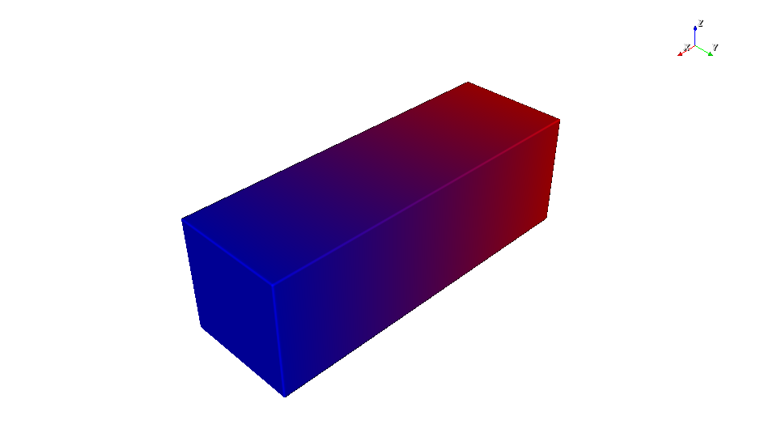
High-resolution tet export in ParaView#
The high-resolution tetrahedral export makes the stochastic material_id field look like a well-mixed gradient because there are enough elements to interdigitate the two materials. The raw volume_fraction_* fields stay smooth because they store the sampled continuous field directly. In this example the suffixes 1 and 3 come from the material ids assigned by pv.default_materials.
High-resolution ParaView — material_id
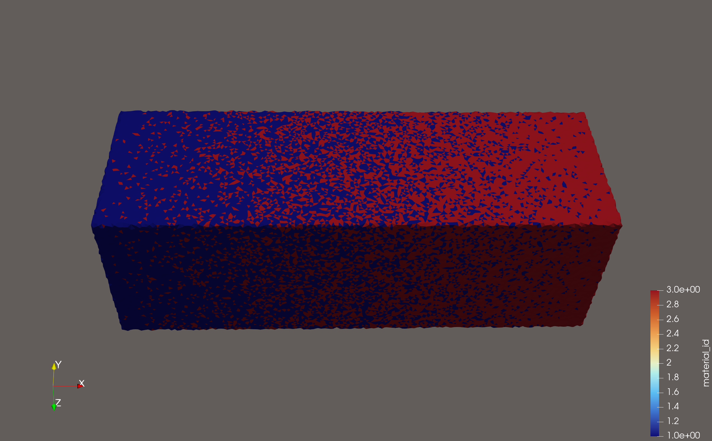
High-resolution ParaView — volume_fraction_1
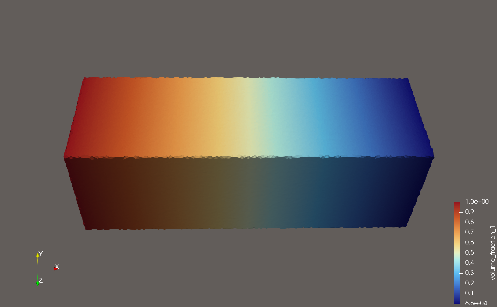
High-resolution ParaView — volume_fraction_3
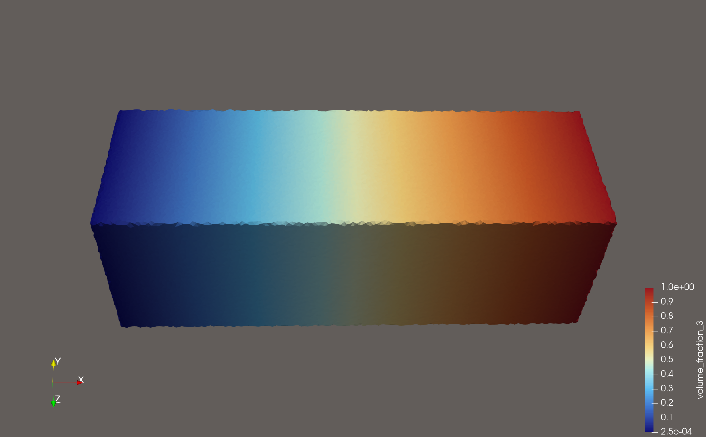
Low-resolution tet export in ParaView#
The low-resolution export uses the same underlying gradient, but the stochastic material_id field is much harder to read as a smooth transition because there are fewer elements available to represent the mixing pattern. The raw volume_fraction_1 field still shows the same continuous ramp.
Low-resolution ParaView — material_id
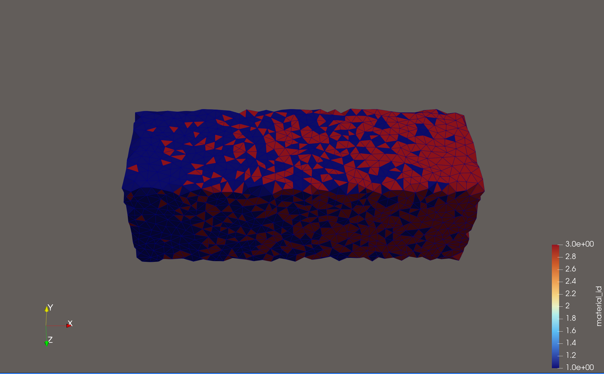
Low-resolution ParaView — volume_fraction_1
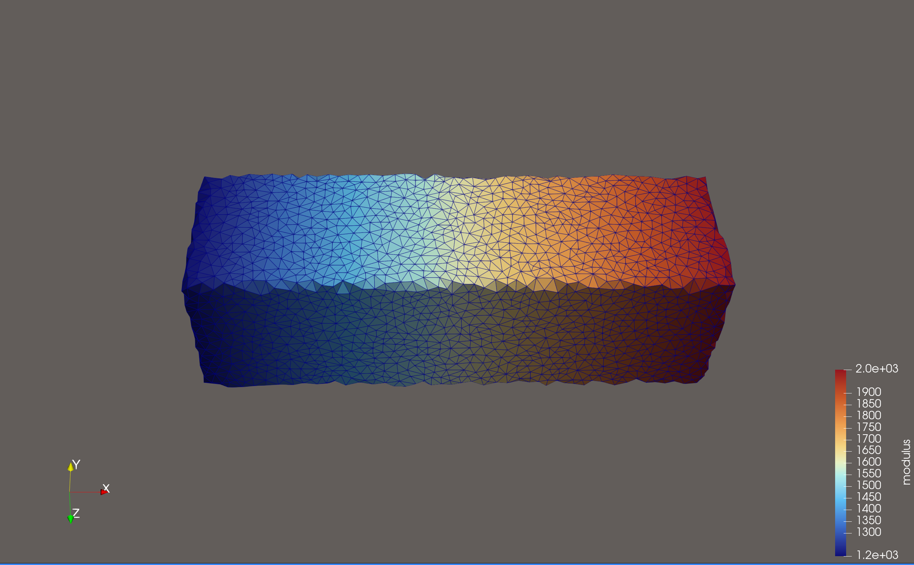
The practical takeaway is simple:
if your downstream solver only has a discrete material assignment path, you may need a finer mesh so the stochastic
material_idpattern captures the intended mixture behaviorif your downstream code can use the raw
volume_fraction_*arrays directly, the exporter already saves them for you
ParaView exposes the available cell datasets directly in the attribute selector:
ParaView attribute list — volume fractions export
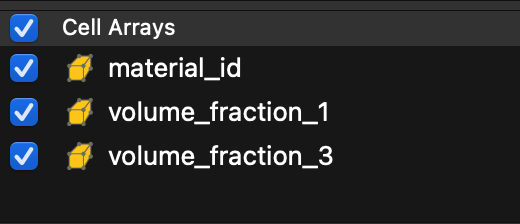
Lesson 2: Direct mechanical property export#
The script examples/compilers/simulation/02_direct_mechanical_properties_export.py shows the direct scalar path. Here the bar carries:
modulusgraded along xpoissons_ratiograded along z
This lesson is intentionally export-only. It uses a different beam than Lesson 3:
here poissons_ratio varies through the beam height, while Lesson 3 uses a
separate cantilever beam where both elastic fields vary along the beam length.
Density is omitted so the walkthrough stays focused on the two scalar fields
that are carried directly into the simulation mesh.
import os
import shutil
import pyvcad as pv
import pyvcad_compilers as pvc
import pyvcad_rendering as viz
bar = pv.RectPrism(pv.Vec3(0, 0, 0), pv.Vec3(40.0, 12.0, 12.0))
bar.set_attribute(
pv.DefaultAttributes.MODULUS,
pv.FloatAttribute("1200 + 800 * clamp((x + 20.0) / 40.0, 0, 1)")
)
bar.set_attribute(
pv.DefaultAttributes.POISSONS_RATIO,
pv.FloatAttribute("0.20 + 0.15 * clamp((z + 6.0) / 12.0, 0, 1)")
)
root = bar
output_dir = "output"
direct_attributes = [
pv.DefaultAttributes.MODULUS,
pv.DefaultAttributes.POISSONS_RATIO,
]
fenics_settings = pvc.SimulationCompilerSettings()
fenics_settings.output_directory = output_dir
fenics_settings.file_prefix = "mechanical_tet"
fenics_settings.backend = pvc.SimulationBackend.FENICSX_XDMF
fenics_settings.mesh_kind = pvc.SimulationMeshKind.TET
fenics_settings.random_seed = 7
fenics_settings.direct_attributes = direct_attributes
tet_settings = pvc.SimulationTetFixedMeshSettings()
tet_settings.facet_size = 0.75
tet_settings.facet_distance = 0.75
tet_settings.cell_size = 0.75
fenics_settings.tet_fixed_settings = tet_settings
pvc.SimulationCompiler(root, fenics_settings).compile()
viz.Render(root)
Run the export with the fenicsx conda environment active:
conda activate fenicsx
python examples/compilers/simulation/02_direct_mechanical_properties_export.py
The key setting here is direct_attributes. It tells the compiler which
non-volume-fraction fields to carry into the output mesh as direct cell data.
Unlike the volume_fractions workflow, these attributes are not converted
into a stochastic material assignment. Each element simply stores its sampled
scalar value.
That means:
the exported fields remain smooth as long as the underlying field varies smoothly
mesh resolution still matters for how accurately the gradient is sampled
but resolution is no longer about representing a stochastic mixing pattern
OpenVCAD previews#
OpenVCAD preview — modulus
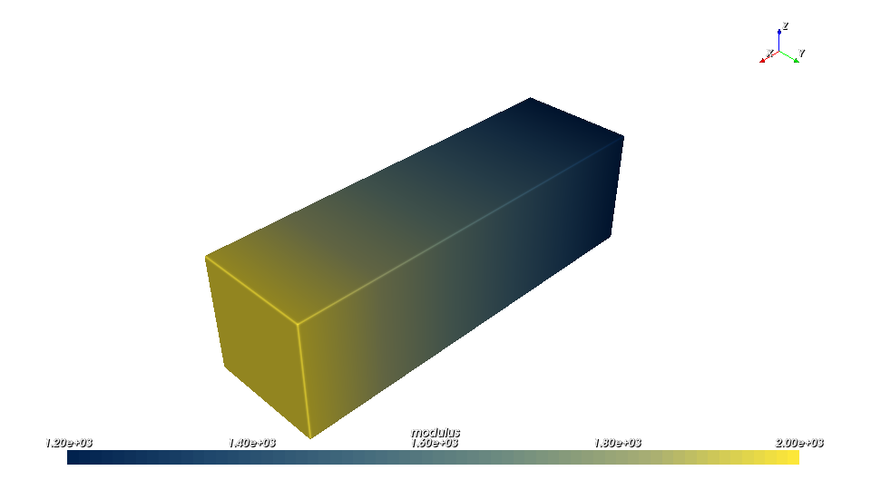
OpenVCAD preview — poissons_ratio
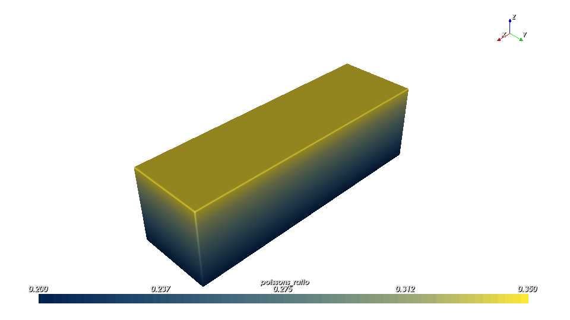
ParaView views of the exported cell fields#
ParaView — modulus
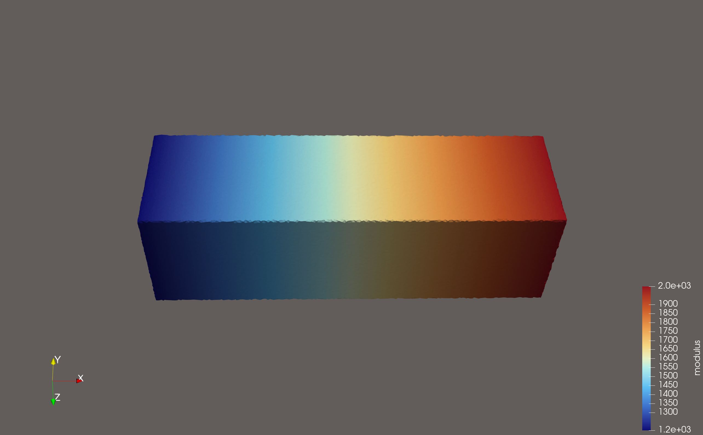
ParaView — poissons_ratio
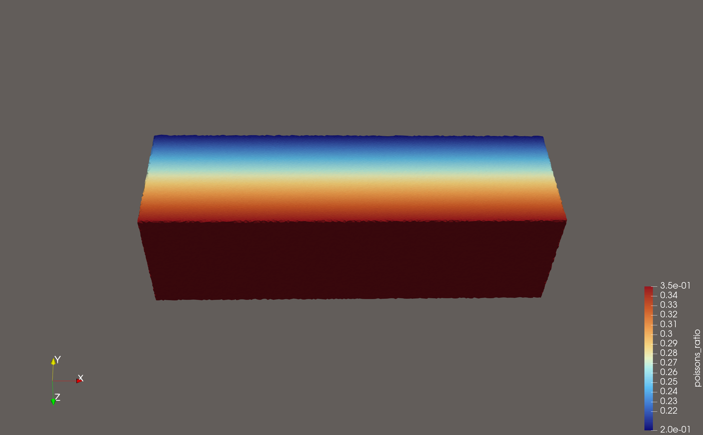
Abaqus export from the same Lesson 2 beam#
The same Lesson 2 design can be exported to Abaqus by switching the backend and choosing a hexahedral mesh:
hex_settings = pvc.SimulationHexMeshSettings()
hex_settings.voxel_size = pv.Vec3(1.5, 1.5, 1.5)
abaqus_settings = pvc.SimulationCompilerSettings()
abaqus_settings.output_directory = "output"
abaqus_settings.file_prefix = "mechanical_hex"
abaqus_settings.backend = pvc.SimulationBackend.ABAQUS_INP
abaqus_settings.mesh_kind = pvc.SimulationMeshKind.HEX
abaqus_settings.random_seed = 7
abaqus_settings.direct_attributes = [
pv.DefaultAttributes.MODULUS,
pv.DefaultAttributes.POISSONS_RATIO,
]
abaqus_settings.hex_settings = hex_settings
pvc.SimulationCompiler(root, abaqus_settings).compile()
Think of the Abaqus path as the same mesh-and-attributes export idea written
into .inp form instead of an XDMF/H5 bundle.
Lesson 3: Solving the exported beam in FEniCSx#
The script examples/compilers/simulation/03_fenicsx_load_exported_design.py
is the full one-shot workflow. It loads a shared Lesson 3 beam definition,
exports the FEniCSx XDMF/H5 bundle, reloads the exported cell-wise material
fields inside DOLFINx, and solves a small-strain static cantilever problem.
Lesson 3 intentionally uses a different beam than Lesson 2. In this solved
cantilever example, the left face stays stiff, the free right face becomes much
softer, and poissons_ratio stays constant so the displacement trend is
driven primarily by the graded modulus.
Install notes:
conda create -n fenicsx -c conda-forge fenics-dolfinx mpi4py h5py numpy
conda activate fenicsx
If you already have a working DOLFINx environment, h5py and numpy
can also be installed with pip inside that environment.
OpenVCAD previews for the Lesson 3 beam#
The simulation script builds its beam from a shared helper before exporting it to FEniCSx. This preview shows the exact OpenVCAD modulus field used by the solve:
OpenVCAD preview — Lesson 3 modulus
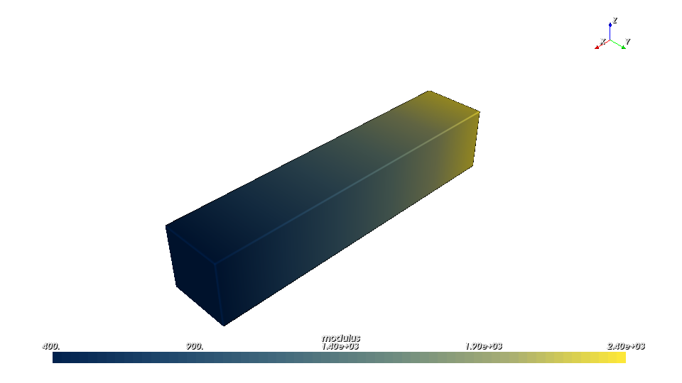
You can read this preview as the mechanical setup for the solve: the modulus is highest at the fixed left face and drops steadily toward the free right face. That means the beam is progressively easier to deform as you move toward the tip, so we should expect larger displacements there once the load is applied.
The lesson-3 beam definition lives in
examples/compilers/simulation/lesson3_beam_definition.py so the guide
asset generator and the simulation example use the same geometry and attributes:
def build_design():
beam = pv.RectPrism(pv.Vec3(0, 0, 0), pv.Vec3(60.0, 12.0, 12.0))
beam.set_attribute(
pv.DefaultAttributes.MODULUS,
pv.FloatAttribute("2400.0 - 2000.0 * clamp((x + 30.0) / 60.0, 0, 1)")
)
beam.set_attribute(
pv.DefaultAttributes.POISSONS_RATIO,
pv.FloatAttribute("0.28")
)
return beam
Governing equations#
The solve is the standard 3D isotropic linear-elastic form with a spatially
varying modulus E(x) and constant Poisson ratio nu:
with Lame parameters reconstructed from the exported OpenVCAD fields:
The weak form is:
with the left beam face fixed (u = 0) and a uniform end traction
t = (0, 0, -5) applied on the right beam face. Because the beam gets
softer toward the loaded end, the displacement magnitude ramps up more sharply
than in a uniform cantilever and is easy to inspect in ParaView.
Because the exported tetrahedral surface is slightly perturbed from the exact
analytic box, the script locates the left and right beam faces using a small
0.05 mm threshold around the mesh bounding box instead of relying on
exact x == min/max comparisons.
Key implementation snippets#
The full script lives at examples/compilers/simulation/03_fenicsx_load_exported_design.py.
The snippets below show the important stages without reproducing the whole file.
1. Export once on rank 0#
script_dir = os.path.dirname(os.path.abspath(__file__))
output_dir = os.path.join(script_dir, "output")
export_error = None
if comm.rank == 0:
try:
root = build_design()
fenics_settings = pvc.SimulationCompilerSettings()
fenics_settings.output_directory = output_dir
fenics_settings.file_prefix = "simulation_results"
fenics_settings.backend = pvc.SimulationBackend.FENICSX_XDMF
fenics_settings.mesh_kind = pvc.SimulationMeshKind.TET
fenics_settings.direct_attributes = [
pv.DefaultAttributes.MODULUS,
pv.DefaultAttributes.POISSONS_RATIO,
]
pvc.SimulationCompiler(root, fenics_settings).compile()
except Exception as exc:
export_error = str(exc)
export_error = comm.bcast(export_error, root=0)
if export_error is not None:
raise RuntimeError(f"OpenVCAD export failed on MPI rank 0: {export_error}")
2. Reload the exported cell fields with MPI-safe cell indexing#
The example uses beam_mesh.topology.original_cell_index so each MPI rank
pulls the correct subset of the exported cell arrays back into its local DG0
storage.
with XDMFFile(comm, xdmf_path, "r") as xdmf:
beam_mesh = xdmf.read_mesh(name="OpenVCADMesh")
cell_space = fem.functionspace(beam_mesh, ("DG", 0))
modulus = fem.Function(cell_space, name="modulus")
poissons_ratio = fem.Function(cell_space, name="poissons_ratio")
with h5py.File(h5_path, "r") as h5:
modulus_data = np.asarray(h5["/CellData/modulus"])
poissons_ratio_data = np.asarray(h5["/CellData/poissons_ratio"])
original_cell_index = np.asarray(beam_mesh.topology.original_cell_index, dtype=np.int64)
modulus.x.array[:] = modulus_data[original_cell_index]
poissons_ratio.x.array[:] = poissons_ratio_data[original_cell_index]
modulus.x.scatter_forward()
poissons_ratio.x.scatter_forward()
3. Solve and patch the exported file in place#
After reloading the DG0 fields, the script reconstructs the Lam’e parameters,
solves the cantilever problem, evaluates DG0 von Mises stress, gathers the
result arrays to rank 0, and updates the original OpenVCAD export in place.
That means examples/compilers/simulation/output/simulation_results.xdmf
keeps the same mesh but gains three new
fields:
displacementas a node-centered vector fielddisplacement_magnitudeas a node-centered scalar fieldvon_misesas a cell-centered scalar field
On rank 0 the example also prints five equal-length x bins with their mean displacement magnitude, which gives you a quick terminal-side check that the response increases from the fixed end to the soft tip.
Run the full one-shot workflow with the fenicsx environment active:
conda activate fenicsx
python examples/compilers/simulation/03_fenicsx_load_exported_design.py
ParaView inspection workflow#
Open
examples/compilers/simulation/output/simulation_results.xdmfClick Apply
Switch the coloring dropdown between
modulus,poissons_ratio,displacement_magnitude, andvon_misesUse Warp By Vector with
displacementif you want a deformed beam view
In the displacement-magnitude result, the figure should get brighter toward the right-hand tip, and the warped shape should bend more strongly there. That is the direct visual signature of the softer material: the fixed end stays comparatively stiff, while the lower-modulus tip accumulates more displacement under the same applied traction.
ParaView — displacement magnitude result
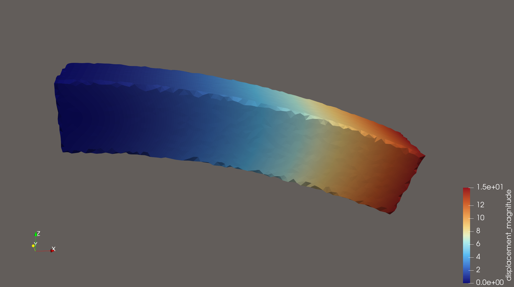
ParaView — von Mises stress result
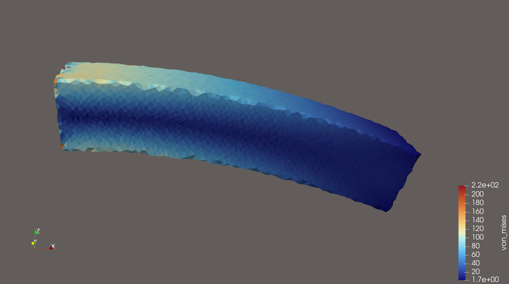
Practical settings reference#
Setting |
Meaning |
|---|---|
|
Folder where the compiler writes the exported files. |
|
Prefix used for the written files. |
|
Output family such as |
|
Element family: |
|
Regular hexahedral cell size in millimeters. |
|
Surface triangle size target for fixed tet meshing. |
|
Surface approximation tolerance for fixed tet meshing. |
|
Interior tetrahedral size target. |
|
Seed used for deterministic stochastic material assignment. |
|
Base material definitions used when exporting |
|
List of scalar attributes to export directly as cell data. |
Further examples#
examples/compilers/simulation/01_volume_fractions_export.py— stochastic material assignment plus raw volume-fraction datasetsexamples/compilers/simulation/02_direct_mechanical_properties_export.py— export-only direct scalar mechanical fields withpoissons_ratiovarying through zexamples/compilers/simulation/03_fenicsx_load_exported_design.py— self-contained DOLFINx/FEniCSx cantilever solve with a stiff-to-soft modulus gradient along x